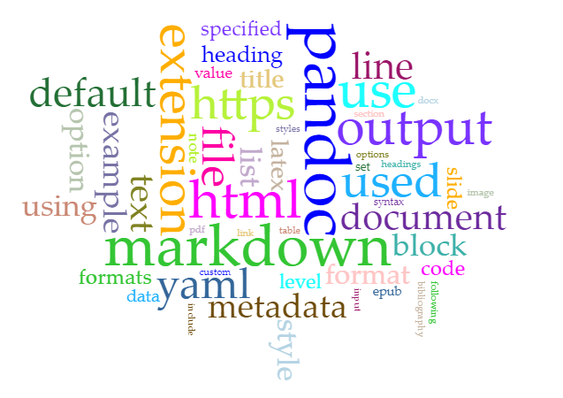

summary: This is a demostration of a final project. It is a simple use of Markdown and Voyant to create a simple project.
# abstract
# introduction
This is my introduction. 
# Methodology
## data collection
describe where the data come from.
## processing data and tool use
# Results
# Anlysis
# Discussion
# Work cited
# Notes